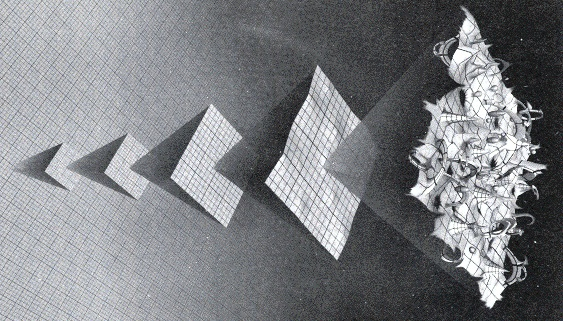
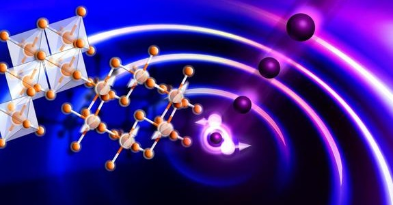
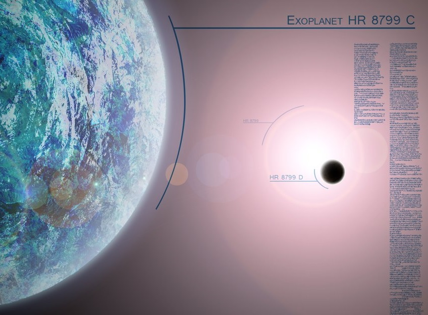

Quantum Computing

Epitome of human engineering "For more than two decades," writes Valerie C. Coffey (@StellarEdit), "one of the holy grails of physics has been to build a quantum computer that can process certain types of large-scale, very difficult problems exponentially faster than classical computers. Physicists are making progress toward this goal every day, but nearly every part of a quantum computer still needs re-engineering or redesign to make it all work." ["The Incremental Quest for Quantum Computing," Photonics Spectra, 6 June 2014] With companies like Google and Microsoft seriously pursuing the subject of quantum computing, progress towards creating a indisputable quantum computer is likely to speed up. I say an "indisputable" quantum computer because the Canadian company D-Wave already has a quantum computer on the market; but, scientists are torn over whether it truly operates as a quantum computer. The problem with quantum computing is that you can never look under the hood to see what is going on because such an act would interfere with the quantum magic that allows a particle (in this case, a qubit) to be both a zero and a one at the same time. The following explanatory video calls this a "secret computation." If you are new the subject of quantum computing, you'll find the video both fascinating and insightful. As the video notes, one of the challenges associated with quantum computing is instability. Because calculations are taking place at the quantum level, the slightest interference can disrupt the process. To increase stability, most experimental systems rely on heavy shielding and are cooled to operating temperatures approaching absolute zero. That's makes quantum computers very expensive to build and maintain. Since they are so difficult and expensive to work with, you might ask: Why bother? Paul Lopata, a physicist at the Laboratory for Physical Sciences in College Park, MD, explains, "Despite the well-known successes of computing machines based on digital logic, some algorithms continue to be difficult to perform - and some problems are intractable not only on existing machines but on any practical digital-logic machine in the foreseeable future!" ["Beyond digital: A brief introduction to quantum computing," The Next Wave, Volume 20, No. 2, 2013] He continues:
Interactions of problems "These intractable problems serve as both a curse and a blessing: A curse because solutions to many of these intractable problems have significant scientific and practical interest. A blessing because the computational difficulty of these intractable problems can serve as a safeguard for secure data storage and secure data transmission through the use of modern encryption schemes. It is clear that the only algorithmic way to solve these intractable problems is to utilize a computing machine that is based on something other than standard digital logic. One such path toward developing a 'beyond-digital logic' machine is in the field of quantum computing. Quantum computing is still in the early stages of its development, and most of its advances are being reported from universities and basic research labs."
Bose-Einstein condensate One of the more interesting advances that has been made resulted from an experiment at Washington State University. Eric Sorensen, a WSU science writer, reports, "Researchers at Washington State University have used a super-cold cloud of atoms that behaves like a single atom to see a phenomenon predicted 60 years ago and witnessed only once since." ["Discovery opens new path to superfast quantum computing," WSU News, 4 June 2014] The phenomenon to which Sorensen refers is called a Bose-Einstein condensate. Sorensen explains that the condensate is important to the field of quantum computing because it makes it easier for researchers to test assumptions and changes in the atomic realm of quantum physics. The experiment was conducted by Peter Engels and his colleagues, who were able to cool about one million atoms of rubidium to 100 billionths of a degree above absolute zero. "At that point," Sorensen explains, "the cluster of atoms formed a Bose-Einstein condensate - a rare physical state predicted by Albert Einstein and Indian theorist Satyendra Nath Bose - after undergoing a phase change similar to a gas becoming a liquid or a liquid becoming a solid. Once the atoms acted in unison, they could be induced to exhibit coherent 'superradiant' behavior predicted by Princeton University physicist Robert Dicke in 1954." Engels told Sorensen, "This large group of atoms does not behave like a bunch of balls in a bucket. It behaves as one big super-atom. Therefore it magnifies the effects of quantum mechanics." Sorensen notes, "While their cloud of atoms measures less than half a millimeter across, it is large enough to be photographed and measured. This gives experimenters a key tool for testing assumptions and changes in the atomic realm of quantum physics." What Sorensen doesn't say is that a Bose-Einstein condensate (BEC) can act as a stable qubit. Coffey notes, "The creation and control of a single qubit is inherently difficult, but controlling many of them simultaneously is even harder. Quantum states are fundamentally limited for the same reasons that the number of transistors on a semiconductor board is limited, according to Christopher Monroe, professor of physics at the University of Maryland's Joint Quantum Institute in College Park. The more of them you have, the more difficult it is to connect them and the noisier the system." An article from European Grid Infrastructure notes, "A BEC is a versatile quantum system that can be precisely controlled, and it is one of the essential requirements for building a quantum computer." ["Getting closer to quantum computing with the grid," European Grid Infrastructure, 21 July 2014] Researchers from the University of Waterloo's Institute for Quantum Computing (IQC) agree that "one major hurdle in harnessing the power of a universal quantum computer is finding practical ways to control fragile quantum states." In an attempt to address that problem, IQC researchers, Joseph Emerson, Mark Howard, and Joel Wallman, "have confirmed theoretically that contextuality is a necessary resource required for achieving the advantages of quantum computation." ["Study finds weird magic ingredient for quantum computing," Phys.org, 11 June 2014] The article explains:

Extreme difficulty "Quantum devices are extremely difficult to build because they must operate in an environment that is noise-resistant. The term magic refers to a particular approach to building noise-resistant quantum computers known as magic-state distillation. So-called magic states act as a crucial, but difficult to achieve and maintain, extra ingredient that boosts the power of a quantum device to achieve the improved processing power of a universal quantum computer. By identifying these magic states as contextual, researchers will be able to clarify the trade-offs involved in different approaches to building quantum devices. The results of the study may also help design new algorithms that exploit the special properties of these magic states more fully." Another interesting breakthrough was announced earlier this year by researchers from Yale University. "Scientists at Yale University have demonstrated the ability to track real quantum errors as they occur, a major step in the development of reliable quantum computers." ["Major Leap Toward Quantum Computing," PCB 007, 14 July 2014] The article notes that information loss, or quantum error, is a major challenge for quantum computing. Yale physicist Rob Schoelkopf, Sterling Professor of Applied Physics and Physics, stated, "Ninety-nine percent of quantum computing will be correcting errors. Demonstrating error correction that actually works is the biggest remaining challenge for building a quantum computer." The article continues: "Schoelkopf's group and other Yale collaborators tackled the first step in quantum error correction -successfully identifying errors as they happen, in their case by means of a reporter atom. Identifying quantum-computing errors in real time is particularly challenging: Qubits are so fragile that searching for errors can result in more errors. To determine if an error occurred, Schoelkopf and his team relied on an ancilla, or a more stable reporter atom, which detected errors without destroying the state and relayed that information back to the scientists on a computer. During their experiments, the scientists used a superconducting box containing the ancilla and an unknown number of photons, or light particles, which were cooled to approximately -459degrees F, a fraction of a degree above absolute zero. This minimized quantum errors induced by the environment. The team then tracked the photons in the box over time to see if and when the photons escaped. Losing photons from the box indicated lost information, or the occurrence of a quantum error. The errors need to be detected without learning the exact conditions in the superconducting box, including the number of photons, because determining the conditions in the box can disrupt the qubit quantum state and result in more errors. So the ancilla reported only the photon parity - whether an even or odd number of quantum photons were present in the box - in real time. A change in parity - for example, from even to odd - indicated the loss of a single photon without revealing whether the box had changed from six to five photons or from four to three photons. The team found success in their first experiment and demonstrated for the first time the tracking of naturally occurring errors, in real time, as would be needed for a real quantum computer." Schoelkopf asserts, "It is hard to estimate how long it will be until we have functional quantum computers, but it will be sooner than we think." That's a claim we've heard before (see my post "Quantum Future: Just Beyond Our Grasp"). Let's hope that this time the prediction is more accurate. Stephen F. DeAngelis is President and CEO of the cognitive computing firm Enterra Solutions.
Media contacts: Gunnar Ahlbom
NASA Research Center, Moffett Field, Calif.
650-604-6982
Gahlbom@gmail.com
⛺ Popular this week
New bizzare state of matter
 PhysicsA new bizarre state of matter split fundamental particles.
Read more...Planet may contain life
 SpaceNew exoplanet may contain integral parts for sustaining life.
Read more...⛺ Recently added
Artificial intelligence replaces physicists
Physicists are putting themselves out of a job, using artificial intelligence to run a complex experiment.
Read more...Darkest material ever made
The substance 'Vantablack' may be the darkest material ever, absorbing up to 99.95% of all light.
Read more...Quantum computing
The epitome of human engineering is at hand - Here's what you need to know.
Read more...